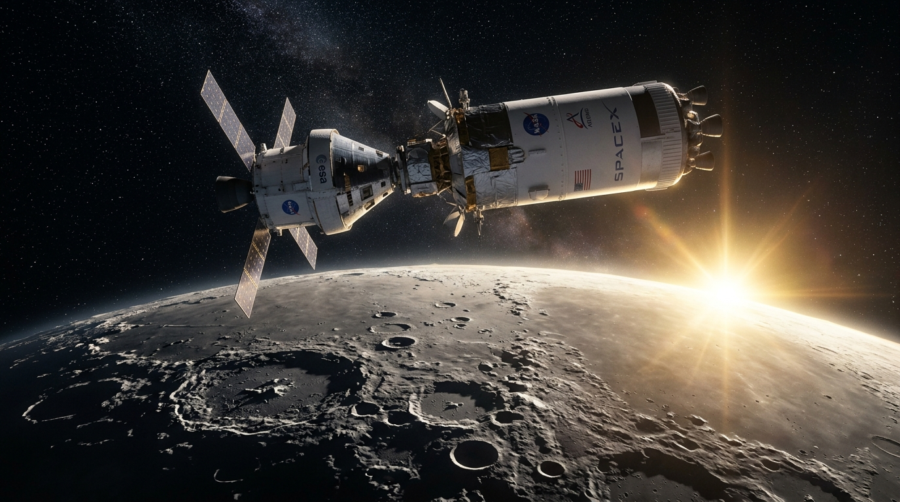

Humanity's Journey To The Moon
Welcome to Lunar Explorer, an interactive deep-space Mission Control exhibit. Traverse over six decades of lunar triumphs—from the early impact probes to Apollo's historic footprints, Chandrayaan-3's southern pole touch, and the dawn of Artemis deep-space colonization.
Six Decades of Lunar Exploration
Follow the chronological telemetry from early robotic space race probes to crewed Apollo triumphs, pioneering Asian robotic expeditions, and the modern international return to the lunar South Pole.
Luna 2 Impact
The first artificial human-made spacecraft to reach the surface of another celestial body, impacting east of Mare Serenitatis and confirming the Moon has no significant dipole magnetic field.
- ▸ Impact Velocity: 3.3 km/s
- ▸ Discovered solar wind flux between Earth & Moon
- ▸ Carried Soviet pennants and scintillation counters
Surveyor 1 Soft Landing
America's first true controlled soft touchdown on lunar soil inside the Ocean of Storms. Disproved the fear that the lunar surface was swallowed by deep, loose dust quagmires.
- ▸ Transmitted 11,200 high-res television photos
- ▸ Radar altimeter guidance touchdown at 3 m/s
- ▸ Proved lunar soil could support heavy Apollo lander pads
Apollo 11: The First Footsteps
Neil Armstrong and Buzz Aldrin pilot the Lunar Module "Eagle" down to the Sea of Tranquility. Armstrong proclaims: "That's one small step for [a] man, one giant leap for mankind."
- ▸ 21.5 hours on lunar surface; 2h 31m EVA
- ▸ Collected 21.55 kg of pristine lunar rocks & soil
- ▸ Deployed Early Apollo Scientific Experiment Package (EASEP)
Lunokhod 1: First Planetary Rover
The world's first remotely driven wheeled robotic rover on an extraterrestrial surface. Landed by Luna 17 in Mare Imbrium and operated for 322 Earth days under remote Soviet piloting.
- ▸ Traversed 10,540 meters across craters and ridges
- ▸ Returned 20,000 television frames & 206 panoramas
- ▸ French laser retroreflector used for millimeter Earth-Moon ranging
Apollo 17: Pinnacle of Apollo
Gene Cernan and scientist-geologist Harrison Schmitt spend 75 hours in Taurus-Littrow valley. They cover 35.7 km in the Lunar Roving Vehicle (LRV) and discover famous orange volcanic glass beads.
- ▸ Returned 110.5 kg of geological samples (Apollo record)
- ▸ Total EVA duration: 22 hours, 4 minutes
- ▸ Final crewed lunar expedition of the 20th century
Chandrayaan-1: Water Discovery
India's maiden deep space lunar orbiter revolutionized lunar science. Data from its Moon Mineralogy Mapper (M3) and Moon Impact Probe (MIP) definitively confirmed widespread water (H₂O) and hydroxyl (OH) molecules.
- ▸ Overturned the 40-year paradigm of a bone-dry Moon
- ▸ 3D topographic mapping of polar permanently shadowed craters
- ▸ Carried collaborative instruments from NASA, ESA, and Bulgaria
Chang'e 4: The Far Side Frontier
Achieved the historic first-ever soft landing on the Moon's far side inside the ancient Von Kármán crater. Relayed telemetry via the Queqiao halo orbit relay satellite positioned at the Earth-Moon L2 point.
- ▸ Deployed the Yutu-2 rover across South Pole-Aitken basin
- ▸ Conducted radio astronomy free from Earth electromagnetic noise
- ▸ Germinated the first plant seed (cotton sprout) on the Moon
Chandrayaan-3: Polar Touchdown
India became the first nation to achieve a soft touchdown near the unexplored Lunar South Pole (69.37° S). The Vikram lander and Pragyan rover conducted direct in-situ thermal and chemical measurements of polar regolith.
- ▸ ChaSTE probe revealed dramatic 60°C temperature gradient in top 10cm
- ▸ LIBS spectrometer unambiguously detected Sulfur (S) on surface
- ▸ Executed a successful hop experiment validating ascent engines
Artemis: Permanent Lunar Presence
The international coalition to return humans—including the first woman and person of color—to the lunar surface. Establishing the Lunar Gateway orbital station and sustainable Artemis Base Camp at the South Pole.
- ▸ Space Launch System (SLS) & Orion crew vehicle
- ▸ Starship Human Landing System (HLS) surface transport
- ▸ In-situ resource utilization (ISRU) to extract water ice & oxygen
3D Mission Archive
Move your cursor across each telemetry card to inspect dynamic perspective tilt and specular reflections. Dive into the critical engineering specifications behind humanity's flagship lunar machines.

Artemis Program
Humanity's return to deep space. Artemis establishes sustainable lunar infrastructure, deep polar ice mining, and the orbiting Gateway platform as a stepping stone to Mars.
Apollo 11
The mission that fulfilled President Kennedy's national goal. Powered by the 363-foot Saturn V rocket, landing astronauts Neil Armstrong and Buzz Aldrin safely on lunar soil.
Chandrayaan-3
A masterclass in precision aerospace engineering. Vikram lander executed an autonomous rough and fine braking sequence to touch down at high southern latitudes (69.37°S).
Chang'e 5
First extraterrestrial sample retrieval in 44 years. Drilled and scooped volcanic material from Oceanus Procellarum, launching an ascender to rendezvous in lunar orbit before Earth re-entry.
Lunar Reconnaissance Orbiter
The gold-standard orbital surveyor mapping lunar topography down to sub-meter resolution. Revealed cold-trap ice pockets, new meteorite impact craters, and historic landing hardware.
Lunar Gateway Station
An international space station in high-eccentricity Near-Rectilinear Halo Orbit (NRHO). Functions as a deep-space staging post for lunar landings, deep space science, and future Mars transit.
Lunar Academy Evaluation
Test your lunar astrophysics and historical mission acumen. Score 6/6 to trigger the Starburst Celebration and unlock your Flight Commander Badge!
What is the acceleration due to gravity on the Moon's surface compared to Earth's?
The lunar surface gravity is 1.62 m/s², approximately 16.6% (one-sixth) of Earth's 9.81 m/s².